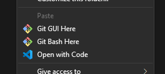
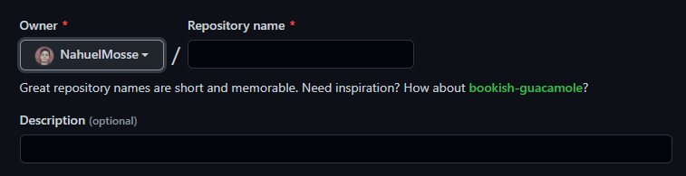

Git
Si es tu primera vez usando Git, hace esto
En la consola de git pone los sigientes comandos:
git config --global user.email "(tu email)"
git config --global user.username "(tu nombre de usuario)"
¿Como crear un repositorio Git?
Lo primero es entrar en la consola de git en la carpeta a inicializar

Luego insertar en consola:
git init
Una ves creado el repositorio local, hay que crear el de la nube, para eso vamos a crear un repositorio en GitHub
Le damos un nombre y opcionalmente una descripcion

Por ultimo ingresamos en codigo:
git remote add origin (URL del repositorio)
seguido de:
git push origin master
¿Como subir tu archivos o modificaciones a un repositorio Git?
nota: en ningun momento tus archivos se van a mover, git los esta moviendo en su sistema interno
Primero hay que pasar los archivos al staying area
git add .
nota: Se puede remplazar el punto por el archivo especifico que se quiera pasar
Luego hay que pasarlos al repositorio local:
git commit -m "(comentario descriptivo de lo que agregaste o modificaste)"
nota: en caso de que estes modificando un archivo que ya esta en el repositorio, estos dos comandos se pueden abreviar a:
git commit -am "(comentario descriptivo de lo que agregaste o modificaste)"
Y por aultimo agregarlo al repositorio en la nube:
git push origin master
nota: no es obligatorio hacer cada ves que haces un commit, podes hacerlo una vez al dia o cuando creas necesario guardar tus archivos en la nube
¿Como clonar un repositorio Git?
Nos pocisionamos en consola en la carpeta donde se quiere clonar y ponemos en consola:
git clone (URL del repositorio)
¿Como ver el estado de mis archivos con Git?
Para ver el estado de un archivo:
git status
nota:
- rojo: no trackeado
- verde: trackeado en el staying area
- sin archivo: en el repositorio local y/o en la nube
¿Como volver a una version anterior con Git?
Para volver atras en las versiones hay que poner:
git reset --hard (codigo de la version)
nota: el codigo de la version se puede ver desde el historial de Git, leer mas abajo
¿Como ver el histrial de versiones de Git?
Para ver el historial de commits de la rama actual:
git log --oneline
nota: el codigo alfanumerico de la izquierda, es el codigo de la version. HEAD indica la rama actual
¿Como ponerle nombre a una version en Git?
Para poner un tag hay que poner:
git tag (nombre de la version) -m "(comentario descriptivo de la version)"
Luego para que se suban a la nube todas las tags que creaste:
git push --tags
¿Como crear una rama en Git?
Para crear una rama primero hay que insertar el siguiente codigo:
git branch (nombre de la rama)
nota: este comando no te pocisiona en esta nueva rama, solo la crea
¿Como cambiar de rama en Git?
Para cambiar de rama:
git checkout (nombre de la rama)
¿Como ver las ramas creadas con Git
Para ver las ramas creadas:
git branch
nota: este comando te muestra con un asterisco la rama actual
¿Como fusionar ramas de Git?
Para fusionar, hay que posicionarse en la rama master y poner el siguiente codigo:
git merge (nombre de la otra rama)
nota: en caso de fallar hay que arreglarlo manualmente
¿Como eliminar una rama?
Para eliminar una rama primero asegurate de no estar en ella, luego insertar:
git branch -d (nombre de la rama)